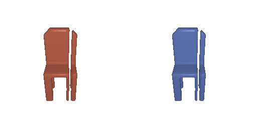
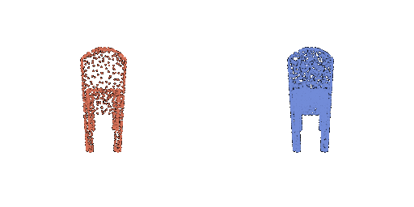
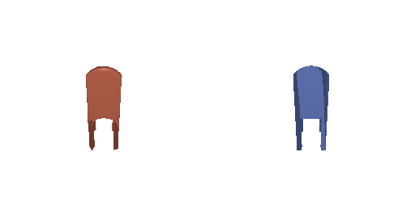

16-825: Learning for 3D Vision
def voxel_loss(voxel_src, voxel_tgt):
loss = torch.nn.functional.binary_cross_entropy_with_logits(voxel_src, voxel_tgt)
return loss
def chamfer_loss(point_cloud_src, point_cloud_tgt):
dist_src = knn_points(point_cloud_src, point_cloud_tgt, K=1).dists # b x n_src x 1
dist_tgt = knn_points(point_cloud_tgt, point_cloud_src, K=1).dists # b x n_tgt x 1
loss_chamfer = dist_src.squeeze(-1).mean(dim=1) + dist_tgt.squeeze(-1).mean(dim=1)
return loss_chamfer.mean()
def smoothness_loss(mesh_src):
loss_laplacian = mesh_laplacian_smoothing(mesh_src, method="uniform")
return loss_laplacian